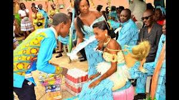
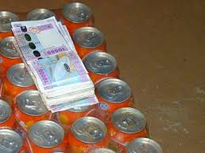

Marriage in Gabon is a symphony of emotions, traditions and love. Each step, each ritual, is a tribute to Gabonese culture, a reminder of the importance of the family, the community. It is a celebration of love, respect and commitment, an experience to be fully lived.
The dowry consists in the delivery on the occasion of the marriage by the future spouse to the family of the future wife of sums of money to valuables,that makes it possible to seal the union between two families.
